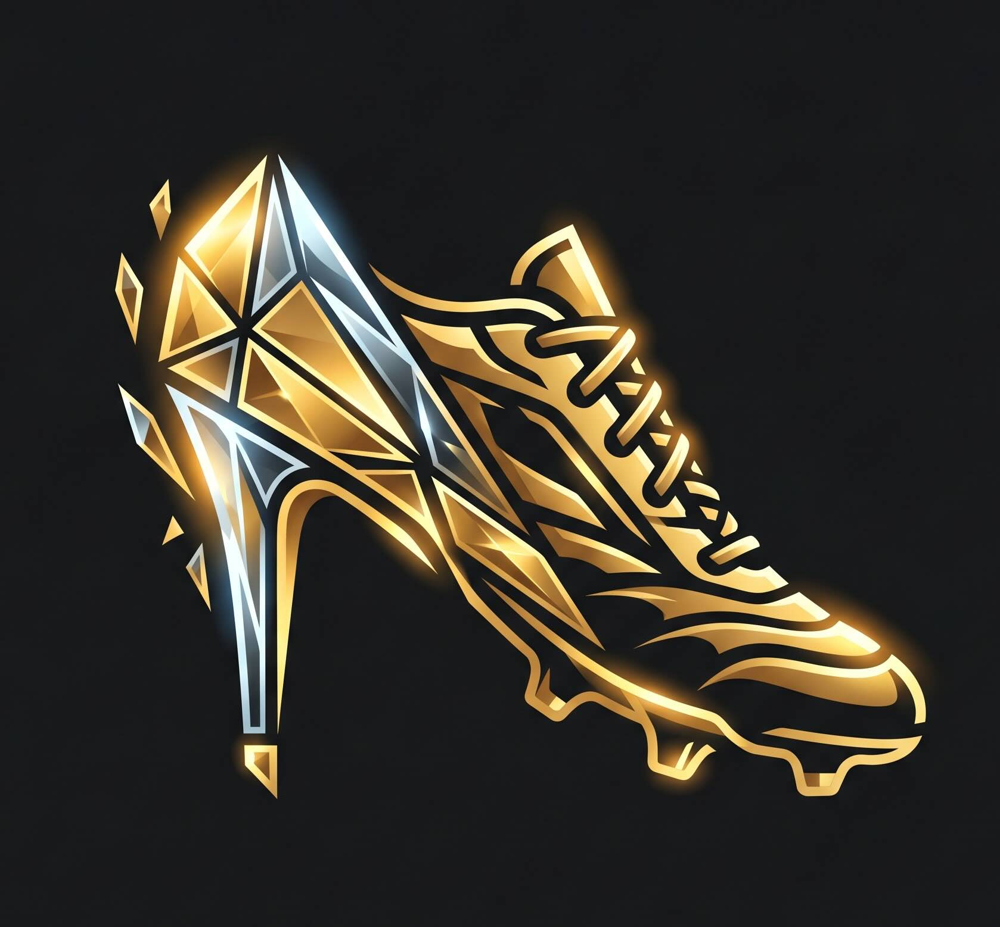
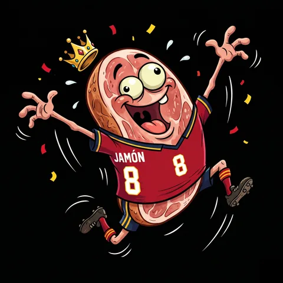
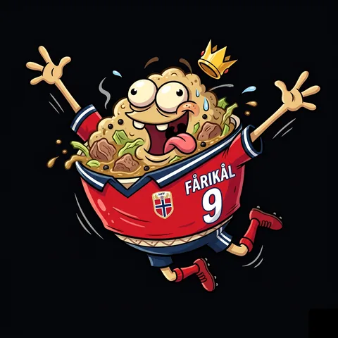
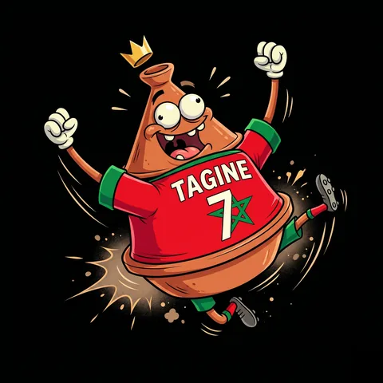
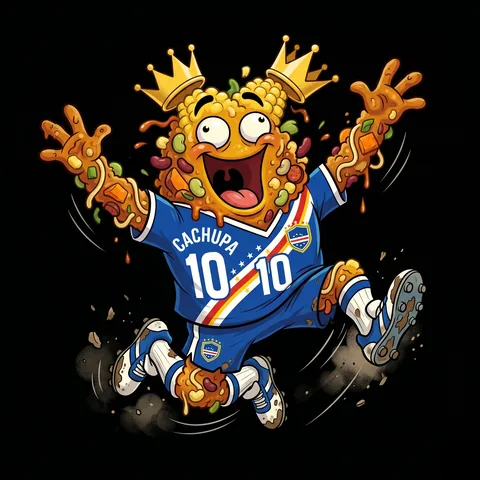

Puras Cinderelas — mockup hi-fi
Combo aprovado: 1A pódio + deltas · 2A herói de pontos · 3B "hoje" em primeiro — tema noite + dourado real, mascotes reais (recorte circular + anel)
Classificação

Puras Cinderelas 2026
João
Classificação
↻ há 12 min
Rita
78
2º
👑

Miguel
84
1º
4
Pedro
▲1
66
5
Ana
▼2
64
6
João TU
▲2
61
7
Carla
—
59
8
Tiago
▼1
55
9
Inês
—
52
10
Bruno
▲1
48
11
Sofia
—
41
12
Hugo
▼1
37
⚽
Equipa
🏆
Classificação
📅
Jogos
Equipa
Puras Cinderelas 2026
João
Os meus pontos
61
6º lugar
▲ +6 hoje
Brasil
Pote 1 · 1/8 de Final
24
▾

Noruega ✨
Pote 3 · Quartos de Final
28
▴
Fase de grupos (2V 1E)
+7
1/16 de Final
+5
1/8 de Final
+8
✨ Bónus Cinderela ×2
+10
Total
28 pts

Marrocos
Pote 2 · 1/8 de Final
9
▾

Cabo Verde
Pote 4 · Eliminado nos grupos
0
▾
⚽
Equipa
🏆
Classificação
📅
Jogos
Jogos
Puras Cinderelas 2026
João
O teu próximo jogo
Noruega
começa em
2h 14m
Quartos · 20:00
✨ vitória vale +12 pts e +10 de bónus cinderela
Em campo hoje · 2 equipas tuas
Marrocos 1–1 Japão
67'
Noruega vs Colômbia
20:00
Outros jogos
🇧🇷
Brasil 2–0 Egito
FT
🇪🇸
Espanha vs Escócia
23:00
🇲🇽
México vs Inglaterra
23:00
ver calendário completo ▾
⚽
Equipa
🏆
Classificação
📅
Jogos
Notas de implementação: tokens existentes em globals.css (gold / night / muted) — nada de novo a criar · mascotes com recorte circular (border-radius: 50% + object-fit: cover + anel dourado), o fundo preto vira vinheta · deltas ▲▼ requerem snapshot diário da classificação (tabela nova ou coluna previous_rank) · countdown e "o que vale" derivam de dados já existentes (fixtures + scoring.ts).